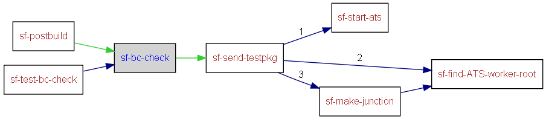

|
Helium API | ||||||
| prev next | frames no frames | ||||||
Location
d:\maintools\sf-config\common\build.test.xml:34:
Conditional execution
No conditions on target execution.
static and dynamic BC Test target
| Name |
|---|
| cmd |
| cmd |
| cmd |
| cmd |
| cmd |
| cmd |
| perl |
| python |
| python |
| Name | Edit status |
|---|---|
| User editable properties | |
| build.drive | recommended |
| Internal properties | |
| build.id | discouraged |
| build.log.dir | discouraged |

<target name="sf-bc-check">
<if><isset property="env.PDT_HOME"/>
<then>
<!-- create BC dir -->
<mkdir dir="${build.log.dir}/BC"/>
<delete file="${build.log.dir}/BC/bc.config" quiet="true"/>
<delete file="${build.log.dir}/BC/BBCResults.xsl" quiet="true"/>
<delete file="${build.log.dir}/BC/libraries.txt" quiet="true"/>
<delete file="${build.log.dir}/BC/libraries_report.xml" quiet="true"/>
<delete file="${build.log.dir}/BC/headers.txt" quiet="true"/>
<delete file="${build.log.dir}/BC/headers_report.xml" quiet="true"/>
<exec executable="cmd" output="${build.log.dir}/BC/bc.config" append="true">
<arg value="/c"/>
<arg value="echo"/>
<arg value="BASELINE_NAME=${sf.spec.bccheck.baseline.name}"/>
</exec>
<exec executable="cmd" output="${build.log.dir}/BC/bc.config" append="true">
<arg value="/c"/>
<arg value="echo"/>
<arg value="BASELINE_SDK_DIR=${sf.spec.bccheck.baseline.skd.dir}"/>
</exec>
<exec executable="cmd" output="${build.log.dir}/BC/bc.config" append="true">
<arg value="/c"/>
<arg value="echo"/>
<arg value="BASELINE_SDK_S60_VERSION=${sf.spec.bccheck.baseline.s60.version}"/>
</exec>
<exec executable="cmd" output="${build.log.dir}/BC/bc.config" append="true">
<arg value="/c"/>
<arg value="echo"/>
<arg value="CURRENT_NAME=${build.id}"/>
</exec>
<exec executable="cmd" output="${build.log.dir}/BC/bc.config" append="true">
<arg value="/c"/>
<arg value="echo"/>
<arg value="CURRENT_SDK_DIR=${build.drive}"/>
</exec>
<exec executable="cmd" output="${build.log.dir}/BC/bc.config" append="true">
<arg value="/c"/>
<arg value="echo"/>
<arg value="CURRENT_SDK_S60_VERSION=${sf.spec.bccheck.current.s60.version}"/>
</exec>
<copy file="${sf.spec.pdt.root}/fts/compatibilityanalyser/reports/BBCResults.xsl" tofile="${build.log.dir}/BC/BBCResults.xsl" failonerror="false" verbose="true"/>
<if><istrue value="${sf.spec.bccheck.enable.la}"/>
<then>
<exec executable="python" dir="${sf.spec.pdt.root}/fts/compatibilityanalyser" output="${build.log.dir}/BC/libraries.txt">
<arg value="CheckBC.py"/>
<arg value="${build.log.dir}/BC/bc.config"/>
<arg value="-la"/>
<arg value="-f"/>
<arg value="${sf.spec.bccheck.reportid}"/>
</exec>
<copy file="${sf.spec.pdt.root}/fts/compatibilityanalyser/reports/Libraries_CompatibilityReport_${sf.spec.bccheck.reportid}.xml" tofile="${build.log.dir}/BC/libraries_report.xml" failonerror="false" verbose="true"/>
</then>
</if>
<if><istrue value="${sf.spec.bccheck.enable.ha}"/>
<then>
<exec executable="python" dir="${sf.spec.pdt.root}/fts/compatibilityanalyser" output="${build.log.dir}/BC/headers.txt">
<arg value="CheckBC.py"/>
<arg value="${build.log.dir}/BC/bc.config"/>
<arg value="-ha"/>
<arg value="-f"/>
<arg value="${sf.spec.bccheck.reportid}"/>
</exec>
<copy file="${sf.spec.pdt.root}/fts/compatibilityanalyser/reports/Headers_CompatibilityReport_${sf.spec.bccheck.reportid}.xml" tofile="${build.log.dir}/BC/headers_report.xml" failonerror="false" verbose="true"/>
</then>
</if>
<if><istrue value="${sf.spec.bccheck.enable.dynamic}"/>
<then>
<for param="file">
<path>
<fileset dir="${sf.spec.test.package.location}/../bctest" includes="*.zip"/>
</path>
<sequential>
<propertyregex override="yes" property="program" input="@{file}" regexp="([^\\/\/]*)$" select="\1"/>
<echo message="INFO Updating bctest package with test info"/>
<echo message="************ Test drop package name: ${program} "/>
<exec executable="perl" dir="${sf.common.config.dir}/tools/ats/" failonerror="false" append="true" output="${build.log.dir}/ATS_${build.id}_dynamicbc.log">
<arg value="ats_specialise_test_drop.pl"/>
<arg value="--test-drop-name=${env.COMPUTERNAME}-bctest-${build.id}_${program}"/>
<arg value="--host-name=${env.COMPUTERNAME}.ad-sfpd.intra"/>
<arg value="--src=${sf.spec.test.package.location}/../bctest/${program}"/>
<arg value="--dest=${sf.spec.test.package.location}\${env.COMPUTERNAME}-bctest-${build.id}_${program}"/>
</exec>
<!-- Now ready to send to ATS3 -->
<echo message="Sending Test drop : ${program} ............"/>
<antcall target="sf-send-testpkg" inheritAll="false">
<param name="sf.spec.test.package.name" value="${env.COMPUTERNAME}-bctest-${build.id}_${program}"/>
</antcall>
</sequential>
</for>
</then>
</if>
</then>
<else>
<echo message="WARNING: PDT_HOME not set, I dont know where the BC tools are installed so cannot continue"/>
</else>
</if>
</target>
|
Helium API | ||||||
| prev next | frames no frames | ||||||